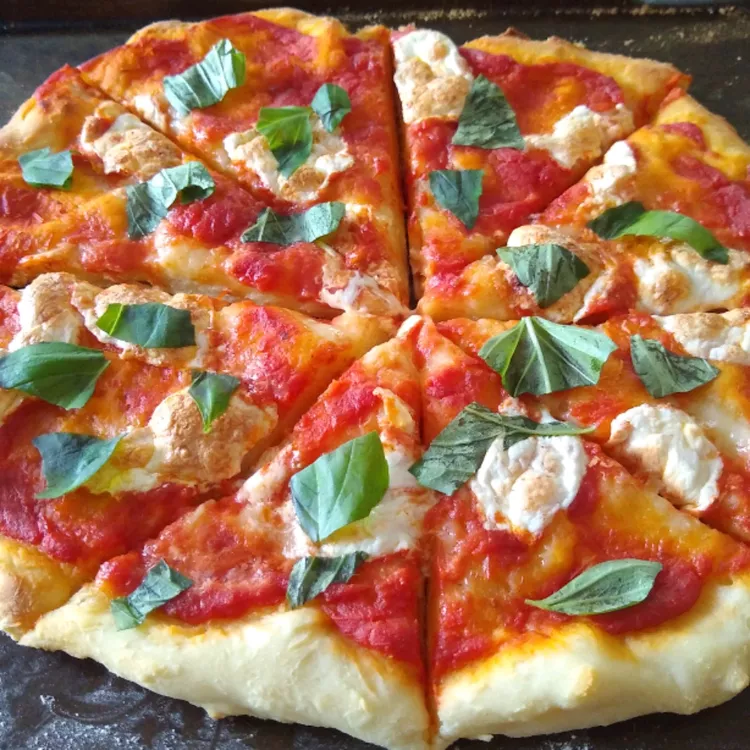

Two Ingredient Pizza

Description
This 2-ingredient pizza dough is fast and easy to make and tastes great! Greek yogurt is the secret ingredient and baking the crust at a higher temperature is the key to making this the perfect pizza. It doesn't get any easier than this folks. Brush dough with olive oil, add your favorite toppings, and enjoy!
Ingredients
- ½ cups of self-rising flour
- Turkish Yogurt
Direction
- Mix Ingredients: Mix the flour and yogurt until a shaggy dough forms.
- Knead: Transfer to a flour dusted work surface, then knead for 8 to 10 minutes. Add more flour as needed if the dough becomes too sticky.
- Parbake: Grease the pizza pan with cooking spray. Spread the dough to the edges of a pan. Parbake the crust for 5 to 7 minutes. Remove from the oven, then add sauce and toppings.
- Finish Baking: Return the pizza to the oven and bake until the crust is lightly browned.